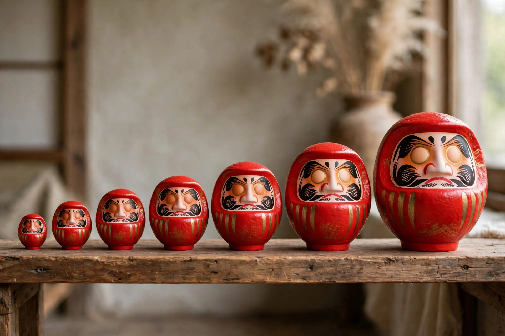

だるまの値段の相場 ― サイズ・号数別の価格目安

この記事の結論
だるまの値段はサイズ（号数）でほぼ決まり、ミニサイズは数百円台から、デスク向けの2〜3号で1,000〜2,000円前後、贈答に使われる5号前後で2,500〜3,500円前後、店舗や式典向けの大型は1万円を超えるものもあります。同じサイズでも、手描きか印刷か、産地や化粧箱の有無で価格は変わります。
号数別の価格目安表
以下は一般的な小売価格の相場感です。販売店や仕様によって幅がありますので、購入前の目安としてご覧ください。号数と高さの換算はサイズと号数のガイドでも詳しく解説しています。
| サイズ（号数） | 高さの目安 | 価格の目安 | 主な用途 |
|---|---|---|---|
| ミニ（〜1号） | 約4〜6cm | 500〜1,000円 | 土産、ノベルティ配布 |
| 2号 | 約9cm | 1,000〜1,500円 | デスク、玄関 |
| 3号 | 約12cm | 1,500〜2,000円 | 合格祈願の定番 |
| 4号 | 約15cm | 2,000〜2,500円 | 店舗、事務所 |
| 5号 | 約18cm | 2,500〜3,500円 | 開店祝いなどの贈答 |
| 6〜7号 | 約21〜24cm | 3,500〜5,500円 | 店頭ディスプレイ |
| 8〜10号 | 約27〜30cm | 5,500〜10,000円 | 法人の願掛け、式典 |
| 12号以上 | 約36cm〜 | 10,000円〜 | 特大・特注サイズ |
同じサイズでも値段が変わる理由
手描きか、印刷か
顔や模様を職人が一体ずつ描く手描き品は、手間がかかる分価格が上がります。印刷仕上げの量産品は単価を抑えられ、配布用ノベルティなどに適しています。どちらが良い悪いではなく、用途で選ぶのが正解です。
産地・素材・仕上げ
高崎などの産地の工房製は、型の出来や彩色の精度に裏付けがあります。陶器や樹脂など素材が変われば価格も変わります。金箔や金粉を使った豪華な仕上げ、化粧箱入りの贈答仕様も価格に反映されます。
名入れ・オリジナル加工
社名やロゴの名入れは、手描きなら1個あたりの加算、印刷なら版代を含む初期費用がかかるのが一般的です。詳しい進め方はオリジナルだるま・名入れだるまの作り方と発注の流れにまとめています。
※価格は2026年時点の一般的な相場感です。原材料や工賃の変動により、実際の販売価格とは異なる場合があります。
よくある質問
Q. 同じサイズなのに値段が違うのはなぜですか？
A. 手描き品は職人の手間がかかるため高くなり、印刷仕上げの量産品は抑えられます。産地や工房、素材、化粧箱の有無でも価格が変わります。
Q. 名入れをすると追加費用はどのくらいかかりますか？
A. 手描きの名入れは1個あたり数百円〜が目安で、印刷の場合は版代などが別途かかることがあります。数量が多いほど1個あたりの負担は下がります。
Q. 安すぎるだるまは品質が心配ですが大丈夫ですか？
A. 安価なものは量産品や輸入品が中心で、仕上げの精度に差が出る場合があります。贈答用には産地の分かる工房製を選ぶと安心です。
Q. まとめ買いで安くなりますか？
A. 卸売や法人向けのまとめ買いでは、数量に応じて単価が下がるのが一般的です。早めに数量と納期を相談すると条件がまとまりやすくなります。
卸価格・法人価格のご相談
小売店向けの卸売、法人向けのまとめ買い・名入れは、数量に応じた条件をご案内します。事業紹介をご覧のうえ、お問い合わせフォームからご連絡ください。